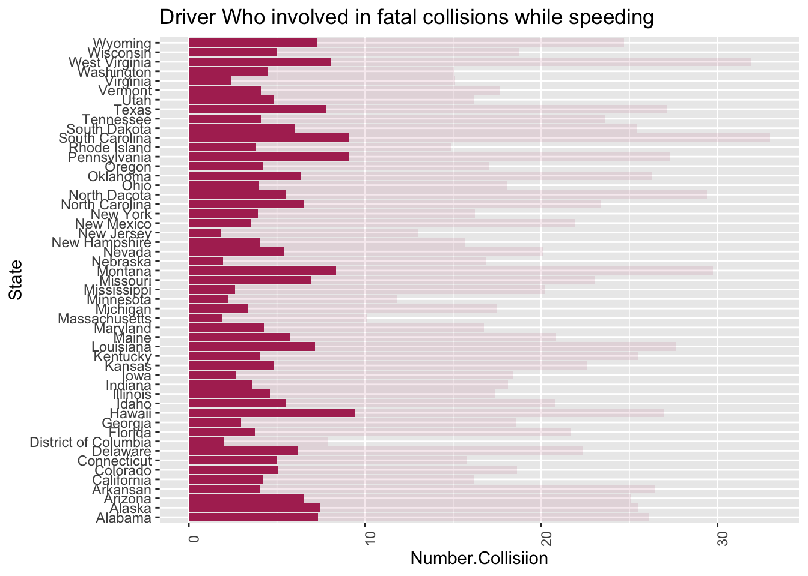
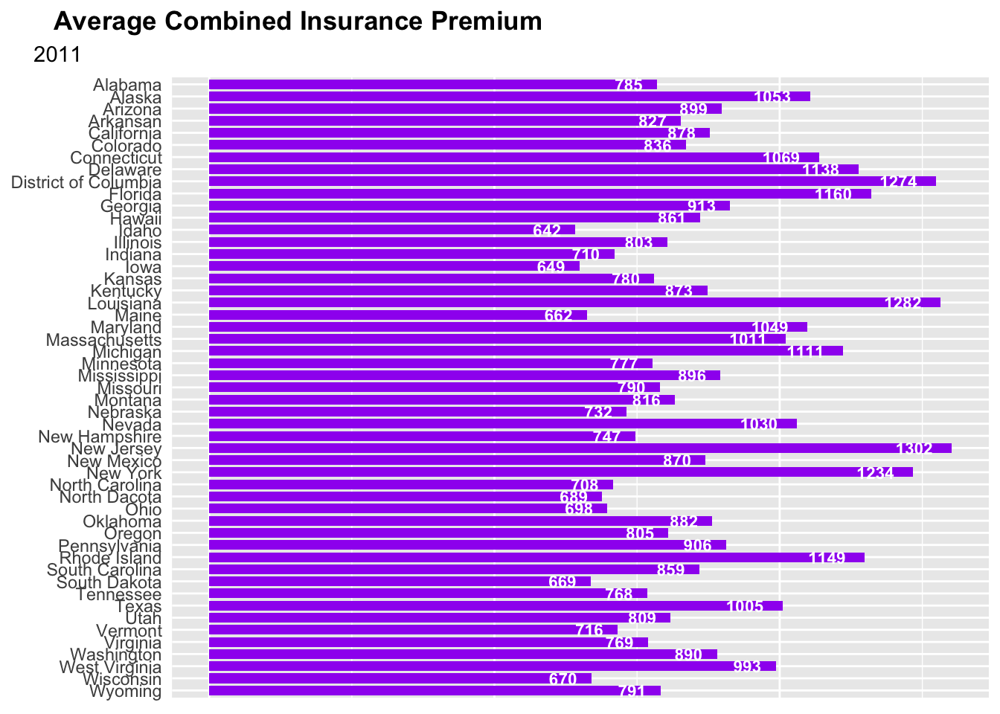
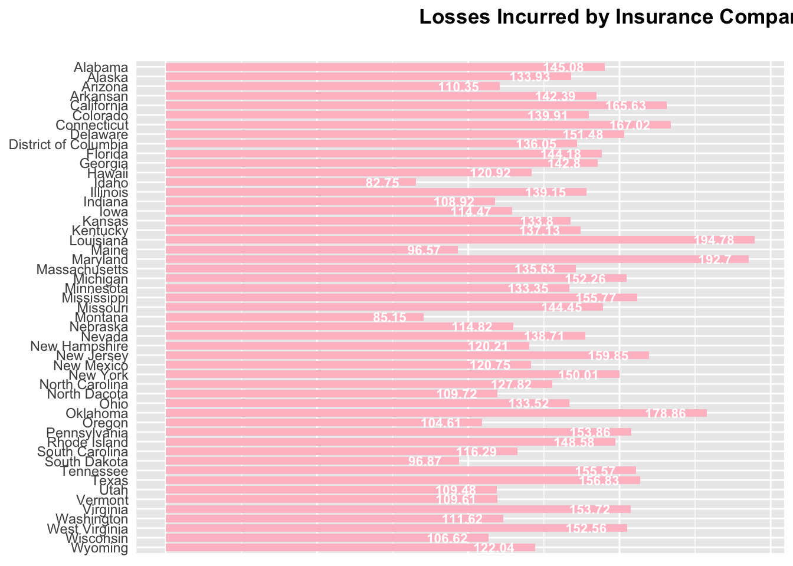

# From first four graphs, I recreated one.
# My code:
setwd("~/Study /MADA_2021/Ehsan_Suez-MADA-portfolio")
library(tidyverse)## ── Attaching packages ─────────────────────────────────────── tidyverse 1.3.1 ──## ✓ ggplot2 3.3.5 ✓ purrr 0.3.4
## ✓ tibble 3.1.4 ✓ dplyr 1.0.7
## ✓ tidyr 1.1.3 ✓ stringr 1.4.0
## ✓ readr 2.0.1 ✓ forcats 0.5.1## ── Conflicts ────────────────────────────────────────── tidyverse_conflicts() ──
## x dplyr::filter() masks stats::filter()
## x dplyr::lag() masks stats::lag()library(ggplot2)
library(knitr)
library(readr)hw5<-read_csv("hw5.csv")## Rows: 51 Columns: 8## ── Column specification ────────────────────────────────────────────────────────
## Delimiter: ","
## chr (1): State
## dbl (7): Number of drivers involved in fatal collisiion per billion miles, P...##
## ℹ Use `spec()` to retrieve the full column specification for this data.
## ℹ Specify the column types or set `show_col_types = FALSE` to quiet this message.colnames(hw5)## [1] "State"
## [2] "Number of drivers involved in fatal collisiion per billion miles"
## [3] "Percentage of drivers involved in fatal collosion who were speeding"
## [4] "Percentage of drivers involved in fatal collosion who were alchohol-impaired"
## [5] "Percentage of drivers involved in fatal collosion who were not-distracted"
## [6] "Percentage of drivers involved in fatal collosion who had not been involved in any previous accident"
## [7] "Car insurance premium ($)"
## [8] "Losses incurred by insurance companies for collisions per insured driver ($)"hw5.1 <- hw5 %>% pivot_longer(names_to = "Categories", values_to = "Percentage", cols = c("Percentage of drivers involved in fatal collosion who were speeding", "Percentage of drivers involved in fatal collosion who were alchohol-impaired", "Percentage of drivers involved in fatal collosion who were not-distracted", "Percentage of drivers involved in fatal collosion who had not been involved in any previous accident"))
hw5.2 <- hw5.1 %>%
mutate(Number.collisiion.Each.Category = `Number of drivers involved in fatal collisiion per billion miles` * Percentage * 0.01)
hw5.3 <- hw5.2 %>% pivot_longer(names_to = "Category.Number", values_to = "Number.Collisiion", cols = c("Number of drivers involved in fatal collisiion per billion miles", "Number.collisiion.Each.Category"))
# subset different percentage category for different cause of fatal accident
# use speeding to recreate the third graph
hw5.3.speed <- hw5.3 %>% subset(Categories == "Percentage of drivers involved in fatal collosion who were speeding")
ggplot(hw5.3.speed, aes( x=State, y= Number.Collisiion,alpha=Category.Number))+
labs(title="Driver Who involved in fatal collisions while speeding")+
geom_bar(stat= 'identity',position = "stack", fill="maroon" ) +
theme(axis.text.x = element_text(angle=90), legend.position = "none")+
coord_flip()## Warning: Using alpha for a discrete variable is not advised.
hw5<-read_csv("hw5.csv")## Rows: 51 Columns: 8## ── Column specification ────────────────────────────────────────────────────────
## Delimiter: ","
## chr (1): State
## dbl (7): Number of drivers involved in fatal collisiion per billion miles, P...##
## ℹ Use `spec()` to retrieve the full column specification for this data.
## ℹ Specify the column types or set `show_col_types = FALSE` to quiet this message.hw5$Insurance<-round(hw5$`Car insurance premium ($)`,0)
hw5 <- select(hw5, State, Insurance)
ggplot(hw5,aes(y=State, x= Insurance))+
labs(title="Average Combined Insurance Premium")+
labs(subtitle = '2011')+
geom_bar(stat= 'identity', fill="purple", width = 0.8)+
scale_y_discrete(limits=rev)+
geom_text(aes(label=Insurance), size=3,color = 'white', hjust = 1.5, fontface = 'bold')+
theme(axis.title.x=element_blank(), axis.title.y=element_blank(),
axis.ticks.x=element_blank(), axis.ticks.y=element_blank(),
axis.text.x=element_blank(), plot.title = element_text(face = 'bold', hjust = -0.36),
plot.subtitle = element_text(hjust = -.18))
hw5<-read_csv("hw5.csv")## Rows: 51 Columns: 8## ── Column specification ────────────────────────────────────────────────────────
## Delimiter: ","
## chr (1): State
## dbl (7): Number of drivers involved in fatal collisiion per billion miles, P...##
## ℹ Use `spec()` to retrieve the full column specification for this data.
## ℹ Specify the column types or set `show_col_types = FALSE` to quiet this message.hw5$Loss<-hw5$`Losses incurred by insurance companies for collisions per insured driver ($)`
hw5 <- select(hw5, State, Loss)
ggplot(hw5,aes(y=State, x= Loss))+
labs(title="Losses Incurred by Insurance Companies")+
labs(subtitle = 'Collisions per insured drivers, 2010')+
geom_bar(stat= 'identity', fill="pink", width = 0.8)+
scale_y_discrete(limits=rev)+
geom_text(aes(label=Loss), size=3,color = 'white', hjust = 1.5, fontface = 'bold')+
theme(axis.title.x=element_blank(), axis.title.y=element_blank(),
axis.ticks.x=element_blank(), axis.ticks.y=element_blank(),
axis.text.x=element_blank(), plot.title = element_text(face = 'bold', hjust = 1.2),
plot.subtitle = element_text(hjust = -4.6))